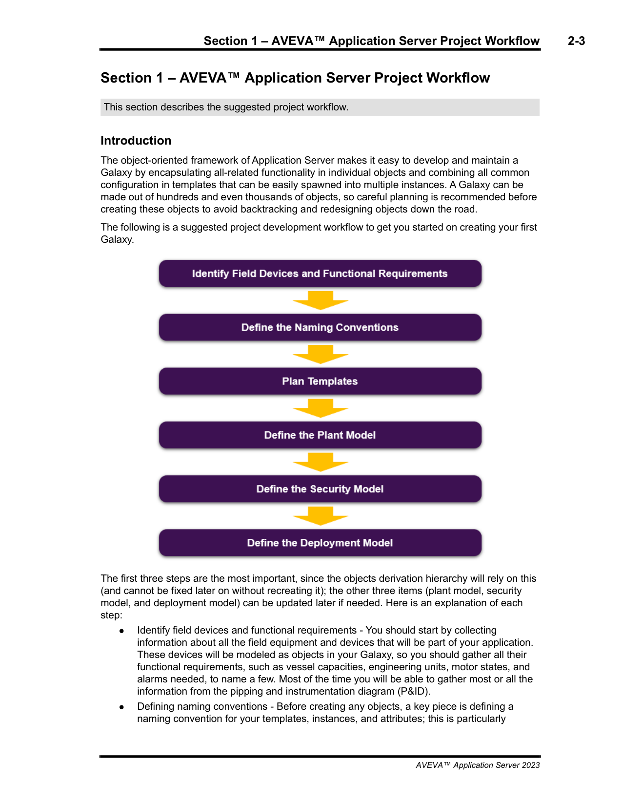
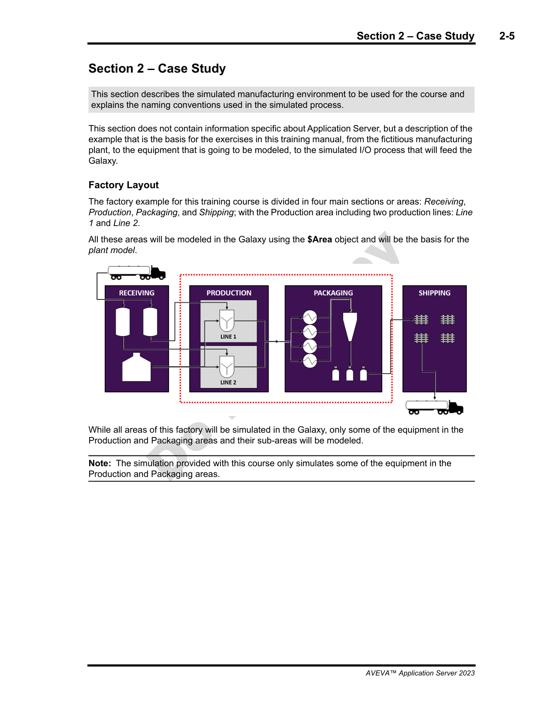
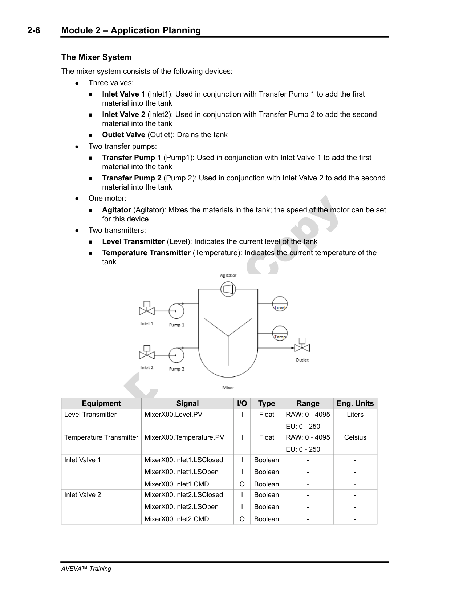
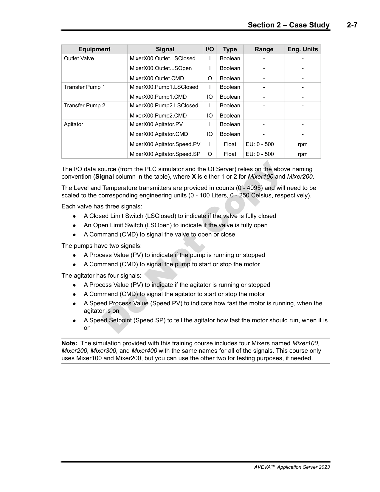
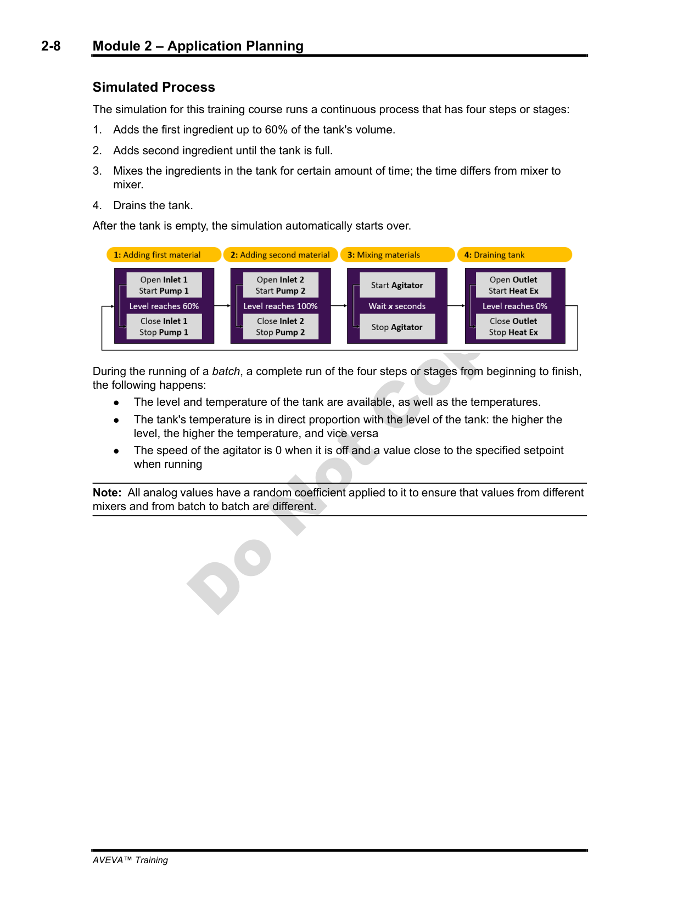

Source: AVEVA Application Server Training Manual — Module 2: Application Planning (Sections 1 & 2, pages 2-1 to 2-8)
This lesson covers the complete Module 2 of the AVEVA Application Server course. We begin with the structured project workflow that guides every successful Galaxy deployment, then apply it to a real-world case study involving a mixer system in a fictitious manufacturing plant. Proper planning is the foundation upon which a robust, maintainable Galaxy is built.
Reference: Module 2, Section 1 (pages 2-1 to 2-4)
Before you create a single object in the Galaxy, you need a plan. A production Galaxy can contain hundreds or even thousands of objects — each with attributes, relationships, scripts, and deployments. If you start building without a clear roadmap, you will inevitably need to backtrack: renaming objects, restructuring templates, reassigning deployments, and correcting security. Every change costs time and risks introducing inconsistencies.
The course teaches a structured 6-step workflow that addresses all major design decisions before implementation begins. This workflow ensures you think through every layer of the application systematically.

The flowchart illustrates a sequential planning process. Each step feeds the next, and together they cover every aspect of the Galaxy application design.
This is the starting point of any project. You must gather all the documentation that defines what the system needs to control and monitor:
The output of this step is a complete inventory of every object that must exist in the Galaxy, along with their attributes and behaviors. In the case study for this course, for example, the equipment list identifies 8 devices (3 valves, 2 pumps, 1 agitator, 2 transmitters) that together form a mixer system.
Before creating any objects, establish a consistent naming standard that will be used across the entire Galaxy. This includes:
MixerX00.[Equipment].[Signal])$Area plant model structureThis is the most critical planning step. Templates define the object types and their inheritance chain — the derivation hierarchy. You must decide:
Define the area structure that mirrors your physical plant layout. The $Area object serves as the root of a hierarchical tree that organizes objects by their physical location or functional area. For example:
$Area → Plant1 → Production → Mixer100$Area → Plant1 → Packaging → Packer1This hierarchy is used for object navigation, alarm grouping, security scoping, and display organization. It is flexible and can be updated as the project evolves.
Configure the permission structure that controls who can view, modify, and operate objects. This includes:
The security model can also be refined after initial deployment as operational needs become clearer.
Finally, plan how objects are deployed across platforms. The $WinPlatform objects represent the runtime servers where Galaxy objects execute. You must decide:
Like the plant model and security model, the deployment model is flexible and can be adjusted post-deployment.
Reference: Module 2, Section 2 (pages 2-5 to 2-8)
To make the planning workflow concrete, the course introduces a case study based on a fictitious manufacturing plant. We will use this plant throughout the course to build, configure, and test our Galaxy application.
The fictitious factory is organized into four main functional areas arranged in a linear process flow. The Production area contains two mixer lines (Line1 and Line2), and the Packaging area handles finished product packaging. These two areas are the focus of our case study.

For our course, we focus on the Production and Packaging areas. Specifically, we model the mixer systems in Production that combine raw materials into finished products.
The mixer is the primary piece of equipment we will model in the Galaxy. Each mixer consists of 8 field devices that work together to perform a batch mixing process:

| Device | Type | Tag Format | Signals |
|---|---|---|---|
| Inlet1 | Valve | MixerX00.Inlet1.[Signal] |
CMD, LSClosed, LSOpen |
| Inlet2 | Valve | MixerX00.Inlet2.[Signal] |
CMD, LSClosed, LSOpen |
| Outlet | Valve | MixerX00.Outlet.[Signal] |
CMD, LSClosed, LSOpen |
| Pump1 | Pump | MixerX00.Pump1.[Signal] |
CMD, LSClosed |
| Pump2 | Pump | MixerX00.Pump2.[Signal] |
CMD, LSClosed |
| Agitator | Motor | MixerX00.Agitator.[Signal] |
CMD, PV, Speed.PV, Speed.SP |
| Level | Transmitter | MixerX00.Level.[Signal] |
PV (range: 0–250 Liters) |
| Temperature | Transmitter | MixerX00.Temperature.[Signal] |
PV (range: 0–250 °C) |
Where X is replaced by the mixer number (1 for Mixer100, 2 for Mixer200, etc.). The tag format follows the general structure: MixerX00.[Equipment].[Signal]
The following page provides the complete signal definitions for each device in the mixer system, including analog ranges for the transmitters:

| Signal Name | Meaning | Applies To |
|---|---|---|
CMD |
Command — the control signal to start/stop or open/close the device | All devices (valves, pumps, agitator) |
LSClosed |
Limit Switch Closed — indicates the valve is closed or pump has stopped | Inlet1, Inlet2, Outlet (valves); Pump1, Pump2 |
LSOpen |
Limit Switch Open — indicates the valve is open | Inlet1, Inlet2, Outlet (valves only) |
PV |
Process Value — the current reading from the transmitter or motor status | Agitator, Level, Temperature |
Speed.PV |
Speed Process Value — the actual running speed of the agitator | Agitator only |
Speed.SP |
Speed Setpoint — the target speed for the agitator | Agitator only |
| Transmitter | Range | Units |
|---|---|---|
| Level | 0 – 250 | Liters |
| Temperature | 0 – 250 | °C (Celsius) |
Note that the level range is 0–250 Liters (not a percentage), and the temperature range is 0–250 °C. These ranges define the scaling for the simulated process values.
The tag format MixerX00.[Equipment].[Signal] produces concrete tags like the following for Mixer100 (where X=1):
| Full Tag | Meaning |
|---|---|
Mixer100.Inlet1.CMD |
Command signal for Inlet1 valve |
Mixer100.Inlet1.LSClosed |
Limit switch closed feedback for Inlet1 valve |
Mixer100.Inlet1.LSOpen |
Limit switch open feedback for Inlet1 valve |
Mixer100.Outlet.CMD |
Command signal for Outlet valve |
Mixer100.Outlet.LSClosed |
Limit switch closed feedback for Outlet valve |
Mixer100.Pump1.CMD |
Command signal for Pump1 |
Mixer100.Pump1.LSClosed |
Limit switch closed feedback for Pump1 |
Mixer100.Agitator.CMD |
Command signal for Agitator motor |
Mixer100.Agitator.PV |
Agitator process value (running status) |
Mixer100.Agitator.Speed.PV |
Agitator actual speed |
Mixer100.Agitator.Speed.SP |
Agitator speed setpoint |
Mixer100.Level.PV |
Level process value (0–250 Liters) |
Mixer100.Temperature.PV |
Temperature process value (0–250 °C) |
For Mixer200, simply replace Mixer100 with Mixer200 — the same equipment and signal structure applies identically.
Area.Equipment.Signal) mirrors the object hierarchy in the Galaxy. The dots represent parent-child relationships — Mixer100 is the parent object, Inlet1 is a child of Mixer100, and CMD is an attribute of Inlet1. This makes navigation intuitive and scripts readable.
The mixer performs a continuous 4-step batch process that repeats indefinitely. This simulated process provides realistic behavior for testing our Galaxy application.

Step 1: Add First Material
CMD = ON, LSClosed = OFF, LSOpen = ON)CMD = ON, LSClosed = OFF)LSClosed = ON)Step 2: Add Second Material
CMD = ON, LSClosed = OFF, LSOpen = ON)CMD = ON, LSClosed = OFF)LSClosed = ON)Step 3: Mix
CMD = ON, PV = running)Speed.SP)CMD = OFF, PV = stopped)Step 4: Drain
CMD = ON, LSClosed = OFF, LSOpen = ON)LSClosed = ON)The simulated process includes realistic analog value behavior with built-in variability:
Speed.SP). There is no ramp-up or ramp-down — it is on or off.The random coefficient used in the temperature simulation adds variability so that each cycle produces unique data points. This is important for testing graphics, trends, and alarms that need to respond to changing values.
MixerX00.[Equipment].[Signal] format used in the case study is a model of clarity and consistency.What are the six steps of the Application Server project workflow, in order?
1. Identify Field Devices and Functional Requirements → 2. Define Naming Conventions → 3. Plan Templates (Derivation Hierarchy) → 4. Define the Plant Model ($Area) → 5. Define the Security Model → 6. Define the Deployment Model ($WinPlatform)
Which steps in the 6-step workflow are the most difficult and costly to change after implementation, and why?
Steps 1-3 (Identify Requirements, Define Naming Conventions, Plan Templates) are the most difficult to change. The derivation hierarchy in Step 3 is especially hard to restructure because every derived object depends on its parent template. Changing the hierarchy requires moving, re-pointing, and re-verifying every affected object, including their attributes, scripts, and deployments.
How many devices make up the mixer system in the case study? List them.
The mixer system has 8 devices: Inlet1 (valve), Inlet2 (valve), Outlet (valve), Pump1, Pump2, Agitator (motor), Level (transmitter), and Temperature (transmitter).
What signals does a valve have versus a pump? How does the Agitator differ from both?
Valves (Inlet1, Inlet2, Outlet) have three signals: CMD (command), LSClosed (limit switch closed), and LSOpen (limit switch open). Pumps (Pump1, Pump2) have two signals: CMD and LSClosed — no LSOpen because pumps are binary devices (running or stopped). The Agitator is more complex: CMD (command), PV (process value / running status), Speed.PV (actual speed), and Speed.SP (speed setpoint).
What are the ranges and units for the Level and Temperature transmitters in the mixer system?
Level: 0–250 Liters. Temperature: 0–250 °C (Celsius). Both are analog signals with the Level value being proportional to Temperature (thermal expansion simulation).
Describe the four steps of the mixer's simulated batch process and the level after each step.
Step 1 — Add First Material: Inlet1 opens and Pump1 runs, level rises from 0 to 60% capacity (~150 Liters). Step 2 — Add Second Material: Inlet2 opens and Pump2 runs, level rises from 60% to 100% capacity (250 Liters). Step 3 — Mix: Agitator runs at setpoint speed for a configured duration, level stays at 100%. Step 4 — Drain: Outlet valve opens, level drops from 100% to 0 (empty), then the cycle restarts at Step 1.
Using the case study's naming convention, what is the full tag for the speed setpoint of the agitator on Mixer300?
Mixer300.Agitator.Speed.SP — following the MixerX00.[Equipment].[Signal] format where X=3 for the third mixer. The Speed.SP signal is specific to the Agitator device and controls the target rotation speed.
End of Lesson 5 — Module 2: Application Planning + Case Study